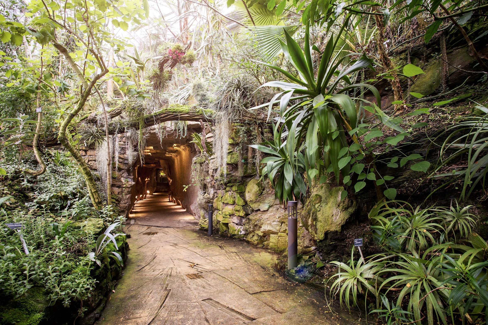

11. 10. 2024–11. 11. 2024
Ottobre nel Giardino Botanico appartiene tradizionalmente alle zucche. Anche quest'anno, zucche di tutte le dimensioni, forme e colori riempiranno le mostre all'aperto. Quest'anno, la mostra di zucche e composizioni di zucche porterà i visitatori nel lontano Messico. Sarà dedicata alla celebrazione che i messicani dedicano a tutti i defunti e ai santi: il Día de los Muertos.
Giardino botanico di Praga, serra Fata Morgana
Indirizzo
Trojská 800/196, 171 00, Troja, Praga 7

Ci saranno una varietà di fantasmi, personaggi e motivi di questa festa messicana. Lo spettacolo sarà tradizionalmente accompagnato da un programma del fine settimana per famiglie con bambini. Nel primo fine settimana del 12 e 13 ottobre sono previsti laboratori creativi a tema autunnale. Nel fine settimana del 19 e 20 ottobre, i visitatori del giardino di Troja potranno divertirsi con i Pumpkin Games. Prima di Halloween, nel fine settimana del 26 e 27 ottobre, grandi e piccini potranno riunirsi per intagliare zucche e realizzare lanterne di zucca per la prossima sfilata di Halloween attraverso il Giardino Botanico venerdì 31 ottobre.
Numero di Telefono
+420 234 148 122
E-Mail
info@botanicka.cz